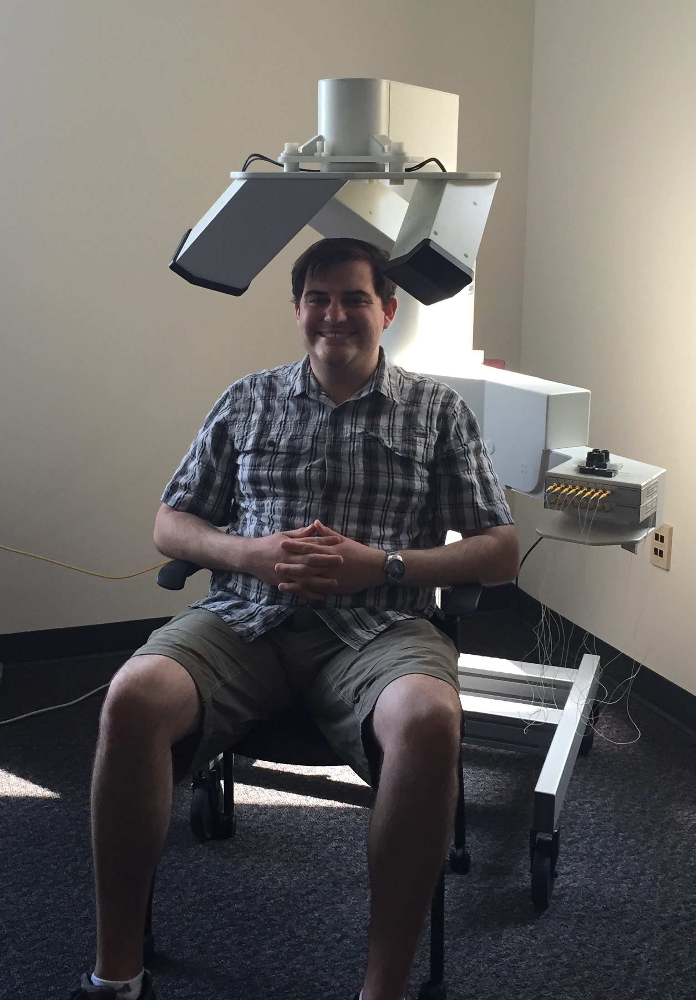

<img class="big" src="ling_memes/notcrazy.png"> (This talk is available at http://savethevowels.org/talks/phonetic_tools.html) --- # Phun Phonetic Tools ### LING 210 - Will Styler --- ## Hi, I'm Will - I'm a Phonetician - <strong>I have a problem</strong> --- ## Your head isn't transparent --- <img class="big" src="phonmedia/sagittal_flesh.jpg"> --- ### We care what you're doing in there - How your tongue is moving - What the various other articulators are doing - How air is flowing - How this turns into changes in sound - How you're listening to and interpreting speech --- ### ... but we can't see any of it - So how can we study and measure speech and speech perception? --- ### Four main types of tool - Acoustical Tools - Articulatory Measurements - Imaging Tools - Tools for studying Perception --- # Acoustical Tools --- ### Listening and the IPA --- ### The International Phonetic Alphabet A writing system used to transcribe what *exactly* is being said in any language of the world. * The IPA is entertaining! - / ðə aj pi ej ɪz ɛɾ̃ɚtejnɪŋ/ * /rǂʛma/ * The IPA can be used to transcribe *anything that's being said* * **Anything!** --- ### "Scatman" by Scatman John <audio controls> <source src="phonmedia/scatman_excerpt.mp3" type="audio/mp3"> </audio> <img src="phonmedia/scatmanIPA.png"> <!-- .element: class="fragment" --> --- ### Acoustic Analysis - Anything important that you do inside your mouth will affect the acoustic signal - Listeners use the acoustic signal to pick up on what we're saying - By studying the sound of speech, we can recover information about what you did --- ### Waveforms <img width="70%" src="phonmedia/noisewaveform.png"> <audio controls> <source src="phonmedia/noise.wav" type="audio/wav"> </audio> --- ### Spectrograms <img width="70%" src="phonmedia/noisebbspectrogram.png"> <audio controls> <source src="phonmedia/noise.wav" type="audio/wav"> </audio> --- ### Acoustic Analysis - <strong>Pros:</strong> - Very cheap - Completely non-invasive - Captures sound in real time - Gives us all the detail which is available to listeners - <strong>Cons:</strong> - Information is hard to processs - Doesn't tell us directly about articulation - Many elements affecting the same signal --- ### Sound tells us about the entire system - Changes to tongue, voicing, lips, velum, all at once - Many processes reflected in a single signal - Sometimes, we want to measure what a single articulator is doing --- # Articulatory Tools --- ### Electropalatography - Create a fake palate with many, many sensors - Measure, electrically, when and where the tongue is making contact --- <img class="big" src="phonmedia/epg_1.jpg"> --- --- ### Electropalatography - <strong>Pros:</strong> - Tells us when and where the tongue is touching the roof of the mouth - Gives very detailed time information - Looks at the shape of the contact too - <strong>Cons:</strong> - Very expensive - Palates must be created for each participant - Doesn't capture many speech sounds --- ### Oral/Nasal Airflow - "How much air is coming out of the mouth and/or nose right now?" --- ### Coarticulation When we start preparing for the next sound *before it even begins* * In the word "bend", we start nasal airflow before the nasal /n/, *during the vowel* --- ### Let's look at the airflow! <img class="big" src="phonmedia/tools_airflowcu.jpg"> --- <img class="big" src="phonmedia/airflow_bend.png"> --- <img class="big" src="phonmedia/airflow_bend_annot_b.png"> --- <img class="big" src="phonmedia/airflow_bend.png"> --- --- <img class="big" src="phonmedia/airflow_bend_annot_coart.png"> --- ### Oral/Nasal Airflow Measurement - <strong>Pros:</strong> - Tells us directly about nasality - Reliable measurement - Not super invasive - <strong>Cons:</strong> - Differs from person to person - Muffles speech - Requires an expensive system --- ### Electromagnetic Articulography (EMA) - Electromagnetic pulses around the head are picked up by tiny sensors - Measures the position of sensors in real time, very precisely - Accurate to 0.1mm, at up to 1250 measurements per second - We're using a Carstens AG501 here at Michigan ---  --- <img class="big" src="phonmedia/emasensor.jpg"> --- <img class="big" src="phonmedia/ema_will_3.jpg"> --- <img class="big" src="phonmedia/ema_will_18.jpg"> --- ### EMA Data <img src="phonmedia/M4_14_mview.jpg"> --- ### Electromagnetic Articulography (EMA) - <strong>Pros:</strong> - Gives us precise position information - Gives us precise time information - Possible to study two people at once - No noise (in data or from machines) - <strong>Cons:</strong> - Only gives us individual points (rather than the whole tongue) - Very time-intensive to collect and label - Sensitive to magnetic fields - Very expensive machines - Starts with "Now I'll glue this to your tongue..." --- ### Articulatory Measurements are helpful - They let us measure what individual articulators are doing - They give precise information rather than noisy signals - They provide a "second opinion" for acoustic data - ... but they still don't let us *see* what's happening --- # Imaging Tools --- ### Trans-Nasal Laryngoscopy - Pass a camera through the nose which can look down onto the vocal folds and pharynx - Use a strobe light to "slow down" the vocal fold motion --- Content Warning: Things are about to get weird. --- <video width="1200" height="600" controls id="video"> <source src="video/laryngoscopy_transnasal.mkv"> </video> <br> <tiny>[Video Source](https://www.youtube.com/watch?v=uwAR7J9471M)</tiny> --- ### Trans-Nasal Laryngoscopy - <strong>Pros:</strong> - Inexpensive - Full color video - High Framerates - <strong>Cons:</strong> - Only useful for the larynx and pharynx - Requires a doctor to be present - "OK, now we'll stick this camera up your nose" --- ### X-Ray Imaging - Pass radiation through the participant onto video film --- <video width="1200" height="600" controls id="video"> <source src="video/xray_kenstevens.mp4"> </video> <br> <tiny>[Video Source](https://www.youtube.com/watch?v=DcNMCB-Gsn8)</tiny> --- ### X-Ray Imaging - <strong>Pros:</strong> - Low noise - High Framerate - Available 30 years ago - <strong>Cons:</strong> - Flesh doesn't show up well - Substantially irradiates your participants' heads --- ### Ultrasound - Pulse high-frequency sound waves into the body - Measure the patterns in which they return to image internal structure --- ### Ultrasound <img class="big" src="phonmedia/tools_ultrasound.jpg"> --- <video width="1200" height="600" controls id="video"> <source src="video/ultrasound_northwind.mp4"> </video> <br> <tiny>From University of Michigan Phonetics Lab</tiny> --- ### Ultrasound - <strong>Pros:</strong> - Poses no risk to participant - Can be done in any office/setting by linguists - Provides the entire tongue - Silent in audible frequencies - <strong>Cons:</strong> - Only shows the tongue - One Dimensional** - Can't visualize the roof of the mouth or other articulators - Very, very noisy data --- ### Magnetic Resonance Imaging (MRI) - Strong magnetic fields can be made to cause hydrogen atoms to emit very faint radio signals - These radio signals, with clever pulsing of the fields, can map the location of water in the body - We look for the water corresponding to the areas we're mapping --- <video width="1200" height="600" controls id="video"> <source src="video/mri_joynash.mp4"> </video> <br> <tiny>[Video Source](https://www.youtube.com/watch?v=0-aEN2xHBCc)</tiny> --- <video width="1200" height="600" controls id="video"> <source src="video/mri_divaemcee.mp4"> </video> <br> <tiny>[Video Source](https://www.youtube.com/watch?v=M2OdAp7MJAI)</tiny> --- ### MRI - <strong>Pros:</strong> - Can visualize any structure - Can visualize any angle - Non-invasive - Capable of very fine details - <strong>Cons:</strong> - Requires access to an MRI machine - Very expensive - Will pull any magnetic metals in you out of you - Very loud - Very slow --- ## There's no free lunch - No perfect balance of image quality, speed, noise, and participant suffering --- ## Tools for studying perception - We need methods for understanding how humans hear spoken language, too! --- ### Modifying the Signal - Change the signal and see how humans respond to it --- ### Remember that vowel nasality we were talking about earlier? - Can we use that to tell "bad" and "ban" apart without hearing the last consonant? --- <center> <table> <tr> <th><h1>bad</h1></th> <th><h1>ban</h1></th> </tr> </table> </center> <audio controls> <source src="phonmedia/diss_hazel_BAD_nfor_ex_c.wav" type="audio/wav"> </audio> --- <center> <table> <tr> <th><h1>bomb</h1></th> <th><h1>bob</h1></th> </tr> </table> </center> <audio controls> <source src="phonmedia/diss_molly_BOMB_ofor_ex_c.wav" type="audio/wav"> </audio> --- <center> <table> <tr> <th><h1>bob</h1></th> <th><h1>bomb</h1></th> </tr> </table> </center> <audio controls> <source src="phonmedia/bob_CJ1_8_noised-2199.wav" type="audio/wav"> </audio> --- <center> <table> <tr> <th><h1>duck</h1></th> <th><h1>dunk</h1></th> </tr> </table> </center> <audio controls> <source src="phonmedia/chase_rhoh-dunk_noised-2194.wav" type="audio/wav"> </audio> --- <center> <table> <tr> <th><h1>bob</h1></th> <th><h1>bomb</h1></th> </tr> </table> </center> <audio controls> <source src="phonmedia/bomb_CJ1_8_noised-2198.wav" type="audio/wav"> </audio> --- <img class="big" src="humorimg/areyouawizard.png"> --- ### Sine Wave Speech --- ### Let's listen to some sounds <audio controls> <source src="phonmedia/thanksforattendingf3.mp3" type="audio/mp3"> </audio> <audio controls> <source src="phonmedia/thanksforattendingf2.mp3" type="audio/mp3"> </audio> <audio controls> <source src="phonmedia/thanksforattendingf1.mp3" type="audio/mp3"> </audio> --- ### Let's listen to some sounds <audio controls> <source src="phonmedia/thanksforattendingf3.mp3" type="audio/mp3"> </audio> <audio controls> <source src="phonmedia/thanksforattendingf2.mp3" type="audio/mp3"> </audio> <audio controls> <source src="phonmedia/thanksforattendingf1.mp3" type="audio/mp3"> </audio> <br> ### Now let's play all three at once! <audio controls> <source src="phonmedia/thanksforattendingsine.mp3" type="audio/mp3"> </audio> --- ### Let's listen to some sounds <audio controls> <source src="phonmedia/thanksforattendingf3.mp3" type="audio/mp3"> </audio> <audio controls> <source src="phonmedia/thanksforattendingf2.mp3" type="audio/mp3"> </audio> <audio controls> <source src="phonmedia/thanksforattendingf1.mp3" type="audio/mp3"> </audio> <br> ### Now let's play all three at once! <audio controls> <source src="phonmedia/thanksforattendingsine.mp3" type="audio/mp3"> </audio> <br> ### Does this help? <audio controls> <source src="phonmedia/thanksforattendingorig.mp3" type="audio/mp3"> </audio> --- <img class="big" src="img/magic.jpg"> --- ### This is called "Sine wave speech", and it's *really* awesome. - Processing sound in this way tells us what humans are *actually listening for* in speech --- ### Modifying the Signal - <strong>Pros:</strong> - Can visualize any structure - Can visualize any angle - Non-invasive - Capable of very fine details - <strong>Cons:</strong> - Requires access to an MRI machine - Very expensive - Will pull any magnetic metals in you out of you - Very loud - Very slow --- ## Measuring Speech Perception --- ### Response-based measures - Reaction time - Measures cognitive load, processing time - Accuracy - Measures absolute perception --- ### Response-based measures - <strong>Pros:</strong> - Easy to collect - Easy to interpret - Gets at the core of linguistic understanding - <strong>Cons:</strong> - RT requires specialized equipment and software - Doesn't give very fine-grained information - Accuracy is all-or-nothing - Many things can affect reaction time besides speech perception --- ### Eyetracking - Let participants respond by looking at pictures - Track the position and timing of their gaze - Humans can look more quickly and accurately than they can physically press buttons --- --- <video width="1200" height="600" controls id="video"> <source src="video/eyetracking_english.mp4"> </video> <br> <tiny>From University of Michigan Phonetics Lab</tiny> --- <video width="1200" height="600" controls id="video"> <source src="video/eyetracking_afrikaans.mp4"> </video> <br> <tiny>From University of Michigan Phonetics Lab</tiny> --- ### Eyetracking - <strong>Pros:</strong> - Very intuitive for participants - Captures decisions with fine temporal detail - Captures aspects of the decision-making process that accuracy can miss - Can measure cognitive load more directly** - <strong>Cons:</strong> - Requires very expensive ($40,000) equipment - Analysis is much more difficult - Words and sounds tested need to be "imageable" - People still vary in the time course of perception --- ### ... and other tools - EEG measures localized brain activity - fMRI measures and localizes brain activity more precisely - Transcranial Magnetic Stimulation can temporarily disable parts of the brain - *... and most other psychological measures can be applied to speech* --- ### These tools make perception measurable and studyable - ... way beyond "I think he said 'bend'" --- ## These are the tools that Phoneticians can use - To measure the sounds of speech - To measure individual articulators - To image inside the head - ... and to understand how we're hearing other people talk --- ### For now, you'll stick to the IPA and careful listening - But when you fall in love with speech, come find us - The best part about phoneticians is that we love sharing our toys --- <huge>Thank you!</huge> --- # Questions? (This talk is available at http://savethevowels.org/talks/phonetic_tools.html) ---